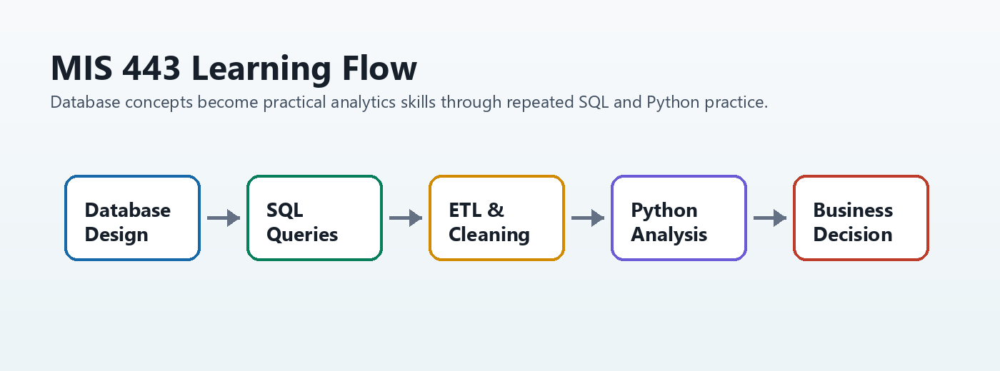

Understand business databases
Analyze concepts, technologies, and methods related to databases, data warehouses, and decision support systems.
SQL, Databases, Python, and Analytics
This website supports MIS 443 students and self-learners who want to understand how business data is stored, queried, prepared, analyzed, and explained. It combines database concepts, PostgreSQL practice, Python workflows, ETL thinking, analytics cases, and self-study resources in one practical learning space.
core topics
class lessons
learning outcome areas
main technical stack

Learning Objectives
Analyze concepts, technologies, and methods related to databases, data warehouses, and decision support systems.
Extract, transform, and load data across business domains while maintaining data quality and usability.
Query, preprocess, analyze, and explain business data using practical tools used by analysts.
Adapt to new data management techniques with awareness of privacy, legal, and professional responsibilities.
Knowledge, Skills, Responsibility
Learning Content
Practice Checks
The final computer-based exam includes six practical questions covering database/table creation, basic SQL, SQL functions, multiple-table queries, common table expressions, and window functions.